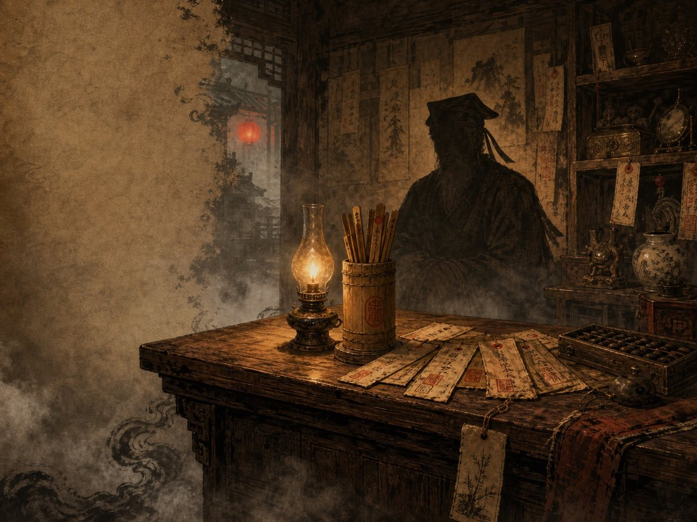
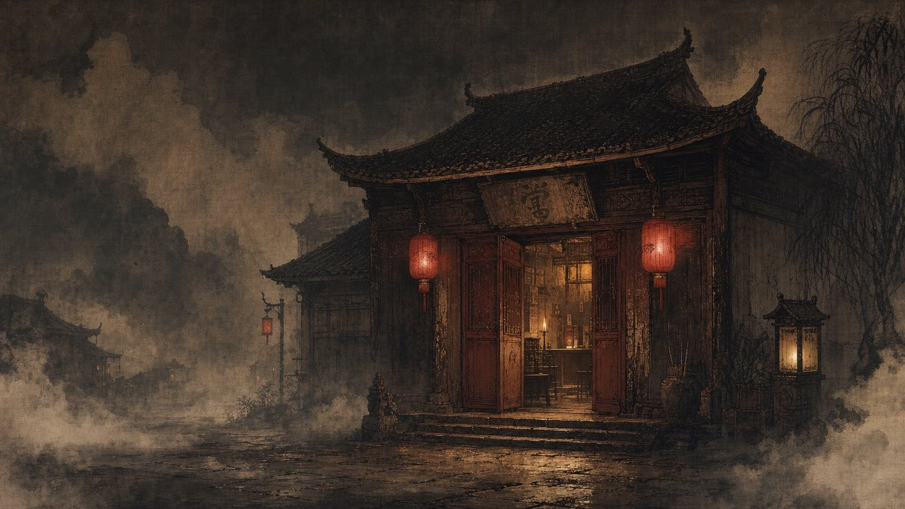
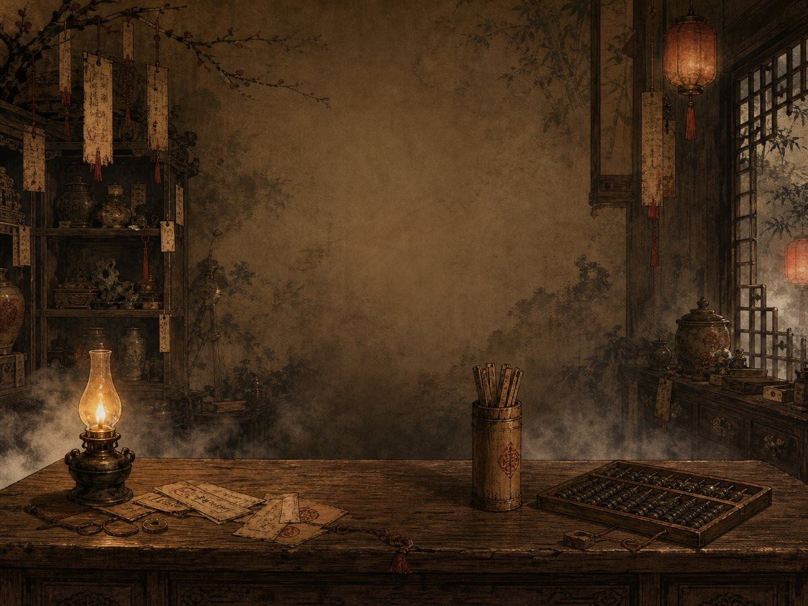
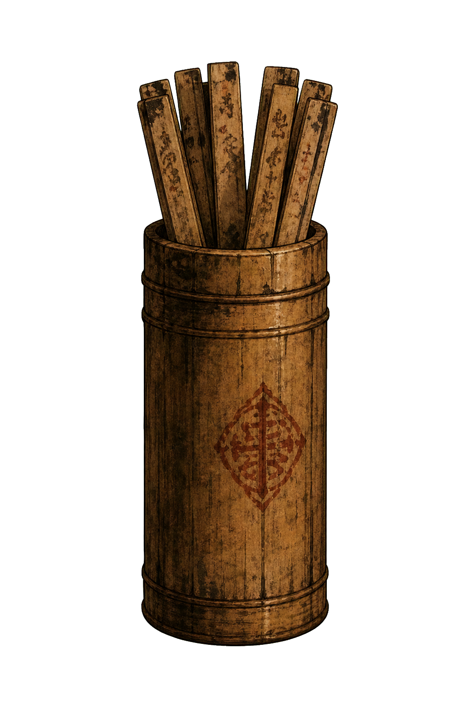

设计定位
《罗刹当铺》的界面不是普通游戏菜单，也不是营销页面。它是一段 90 到 120 秒的志怪交互体验。用户从雾门外进入夜铺，完成摇签、认命、典当、取物、续签、得票、离店。
设计关键词是聊斋骨、旧纸感、木质旧物、朱砂印、烛光、雾、账本、掌柜、命数和一夜故事。所有界面都围绕这些词收束。
H5 志怪小游戏 UI 设计复盘
一间只在夜里开门的当铺，一张能照见人的命牌，一张可分享的一夜当票。UI 的任务不是解释规则，而是让玩家相信自己真的走进了这间铺子。
《罗刹当铺》的界面不是普通游戏菜单，也不是营销页面。它是一段 90 到 120 秒的志怪交互体验。用户从雾门外进入夜铺，完成摇签、认命、典当、取物、续签、得票、离店。
设计关键词是聊斋骨、旧纸感、木质旧物、朱砂印、烛光、雾、账本、掌柜、命数和一夜故事。所有界面都围绕这些词收束。
先让玩家看到门、桌、灯、签筒和掌柜，再放按钮和数据。页面从组件堆叠转成场景承载。
深褐、暖棕、宣纸黄、朱砂红和墨色构成主色。层级靠纸张、木纹、边框、印章和阴影区分。
动效只服务关键仪式点。雾门、摇签、竹签弹出、朱印盖落、当票展开，都让点击变得有重量。
开场使用当铺远景，标题直接压在场景上，不做营销式 hero。第一屏只负责让玩家愿意推门。
玩家先回答“来此逛逛”还是“有烦恼事欲解脱”。选择不是菜单，而是把来意写进后续命格和故事。
签筒是核心仪式道具。最终改成独立旧竹木素材，签筒摇晃后弹出同质感竹签，再盖朱砂命印。
命格卡既是游戏内反馈，也是可分享的人格卡。判词短、小传准、钩子留白，右下角承接命主故事二维码。
货架不是商城。每件物品都是一件能被典当或取走的人生隐喻，档位通过纸面、暗金和朱砂边区分。
当票卡是一局的收束。交易、命数、临别金句和二维码都要收在旧纸里，二维码可扫但不能抢戏。
铺子不识别你是谁，但铺子记得你来过。夜账只在本机保存故事索引，有记录时才在首页露出淡淡入口。

4:3 比赛展示图
开场远景当铺
店内主场景
独立旧竹签筒位图负责大气氛，CSS、SVG 和 React 负责交互。签筒、朱印、卡片、雾气、当票拼合都由组件和样式控制，避免把交互动效锁死在一张图里。
先跑通主流程，从摇命牌到当票卡。功能完整，但还像 H5 表单。
加入场景图、过场、掌柜剪影、货架反馈、BGM、音效和获得动画，让流程有手感。
重做签筒，补掌柜问来意、九两九钱暗线、节气维度、命主故事和二维码入口。
从背景图裁签筒会边缘脏、位置错、动画别扭。核心道具必须独立设计。
二维码太大会遮挡当票，内容太长又会生成失败。最终卡片只放短链接，长链接留给按钮兜底。
朱砂印是仪式，不是遮罩。最终印章上移，右下角留给二维码，盖印动画短暂出现后淡出。